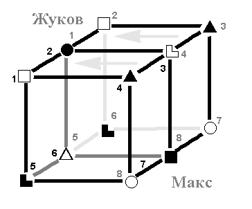

3.10. Зеркало: РПЦ (Макс, ЛСИ) ↔ Русь (Жуков, СЛЭ)
|
Orc-Paladin как стандарт сегодняшнего героя... |
Зеркальные отношения уже описывались (см. гл. 3.3), поэтому здесь опустим общее описание (понятно, что общность интересов здесь другая: клуб управленцев).
1 ↔ 2. ЧС, БЛ. Жуков легко осуществляет силовое воздействие, причем весьма умело. У Макса же всегда есть множество идей, как это можно осуществить.
По какой системе осуществлять воздействие или к какой системе приводить социум – отношения аналогичные, только наоборот – здесь Жуков осуществляет творческий подход, а Макс «точно знает».
В общем, если оба работают в одном направлении, то никому мало не покажется... Что, собственно, мы и видели на примере самого процесса становления христианской церкви на Руси ([01] и др., приводились выше).
3 ↔ 4. БЭ, ЧИ. Ролевая вызывает раздражение у партнера. Т.е. навязываемые РПЦ отношения вызывают неприятие у светской власти (а также народонаселения того времени), а попытки выдвинуть идеи для разрешения ситуации больно задевают церковников – они же точно знают, как надо (БЛ в базе)! Однако не стоит забывать о том, что разговор идет не об индивидуальных отношениях, а о социальных – т.е. интенсивных проявлений ролевой здесь попросту не будет.
5 ↔ 6. БИ, ЧЭ. Каждый ждет новой информации, но она не подается. Тем не менее конфликта это не вызывает, идут мелкие «поглаживания». Обоим не понятно – когда и как проявлять эмоции? Поэтому, если уж они проявляются, то по полной программе – на некоторое время попросту сметая ментальные функции. Адекватностью такое поведение явно не отличается.
Следует заметить, что на Русь христианская церковь пришла уже с многовековым опытом власти, и поэтому смогла избежать детскости проявлений. Сразу заняв свое место «пастыря стада», РПЦ стала работать на укрепление власти СЛЭ, что, конечно, было оценено. Светские власти всячески содействовали укреплению системы, предлагаемой РПЦ, та в свою очередь, проповедовала: «любая власть – от бога».
При этом, в отличие от многих христианизированных стран, на Руси клерикалов никогда не допускали до власти непосредственно (хотя, понятно, существовала церковная цензура и т.д.). Можно привести два характерных примера – отношение к РПЦ Петра Первого (СЛЭ), который поставил церковь в подчиненное положение по отношению к светским властям, и отношение Сталина (ЛСИ), который сначала полностью отстранил РПЦ от власти (началось это отстранение, понятно, еще до его правления) и поставил ее деятельность под контроль соответствующих органов, но во время Второй Мировой дал большую свободу, так как в деле управления настроениями народа требовалась поддержка со всех сторон. Впрочем, контроль такими поблажками ослаблен не был – и это правильно, так как в любой стране должна быть только одна власть.
7 ↔ 8. ЧЛ, БС. Ограничительная здесь практически не работает – на демонстративную воздействовать ей сложно. Соответственно, Максу очень сложно одернуть Жукова по ЧЛ, а Жукову – объяснить Максу, что тот не прав по БС. Поэтому Жуков спокойно делает, что он считает нужным, а Макс живет так удобно, как ему хочется. Соответственно, Максу практически очень сложно одернуть Жукова по ЧЛ, а Жукову – объяснить Максу, что тот не прав по БС.
Здесь можно привести исторический пример – противодействие бояр поползновениям своих сыновей принять монашество (XII в.): «Иоанн, как и ожидалось (NB! – авт.), «ражжегся на ня [на иноков] гневом, сына своего ради», и «поим отрокы многы, иде на святое то стадо, иже и распудив их». Он прямо вломился в пещеру и собственными руками выволок оттуда своего сына, содрал с него иноческую мантию...» [72]. Даже по этой короткой цитате видно, что почтения к официальной церкви не наблюдается, а методы противодействия – черносенсорные.
Таким образом, зеркальные отношения наглядно показывают причины легкости консенсуса между Русью и церковным аппаратом, силовые методы обращения в христианскую систему и т.п.
В следующей главе мы попытаемся свести все вышесказанное в цельную
историческую картину.